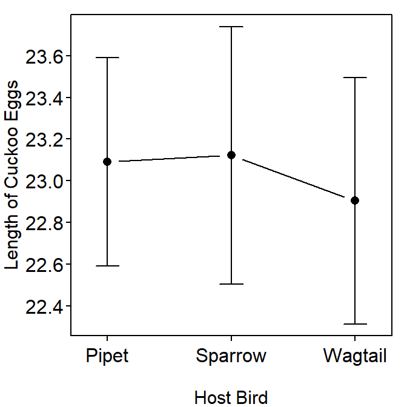

Raising Young Cuckoos
- The overall sample size is \(n\)=44 and the number of groups is \(I\)=3.
- The coefficients from fitting the one-way ANOVA to the cuckoo data are in Table 1 below.
- The “Intercept” coefficient is the sample mean cuckoo egg length in pipet (reference group) nests. Thus, the mean length of cuckoo eggs in pipet nests is 23.09 mm.
- The “speciesSparrow” estimate is the difference in sample mean cuckoo egg length between the sparrow (second group) and pipet (reference group) nests. In this case, the mean cuckoo egg length in sparrow nests is 0.03 mm longer than the mean cuckoo egg length in pipet nests.
- The “speciesWagtail” estimate is the difference in the sample mean cuckoo egg length between the wagtail (third group) and pipet (reference group) nests. In this case, the mean cuckoo egg length in the wagtial nests is 0.19 mm shorter than the mean cuckoo egg length in the pipet nests.
- The coefficient confidence intervals are also in Table 1 below.
- One is 95% confident that the population mean cuckoo egg length in pipet (reference group) nests is between 22.56 and 23.62 mm.
- One is 95% confident that the population mean cuckoo egg length in Sparrow nests is between 0.73 mm LESS and 0.79 mm MORE than the population maean cuckoo egg length in Pipet nests.
- One is 95% confident that the population mean cuckoo egg length in Wagtail nests is between 0.93 mm LESS and 0.56 mm MORE than the population
- The ANOVA table for the one-way ANOVA is in Table 2. How each degrees-of-freedom is calculated is below.
- \(df_{species}\) is \(df_{Among}\), which is one less than the number of groups (host bird species; $I=$3) in the analysis.
- \(df_{Residuals}\) is \(df_{Within}\), which is the total number of cuckoo eggs ($n=\(44) minus the total number of groups (\)I=$3) in the analysis.
- \(df_{Total}\) is not shown in Table 2 but it is the total number of cuckoo eggs ($n=$44) minus 1.
- Interpretations of the mean-squares in Table 2 are below.
- \(MS_{species}\) is \(MS_{Among}\), which is the variability that is explained by using separate means (full model) that was not explained when only one mean (simple model) was used to represent all three groups. It is also the variability of the group means.
- \(MS_{Residuals}\) is \(MS_{Within}\), which is the variability in cuckoo egg length around the mean cuckoo egg length of each host bird species group or the variability unexplained by using a separate mean for each group (i.e., the full model).
- \(MS_{Total}\) is not shown in Table 2, however it is the variability in cuckoo egg length around the grand mean or the variability unexplained by using only one mean (simple model) to represent all three groups.
- The F test statistic in Table 2 is the ratio of the variability explained by the full model that was not explained by the simple model to the variability of the simple model. Alternatively, the F test statistic is the ratio of the variability of group means to the variability of individuals within the groups.
- No, the overall p-value (0.820; Table 2) is greater than 0.05. There is no statistical difference in mean cuckoo length among the three species of host birds Figure 1.
Table 1: Coefficients from the one-way ANOVA fit of egg length by bird species.
Ests 2.5 % 97.5 %
(Intercept) 23.09000000 22.5610944 23.6189056
speciesSparrow 0.03142857 -0.7297967 0.7926538
speciesWagtail -0.18666667 -0.9346522 0.5613189
Table 2: Analysis of variance table for the egg length by bird species.
Df Sum Sq Mean Sq F value Pr(>F)
species 2 0.410 0.20496 0.1992 0.8202
Residuals 41 42.182 1.02883

Figure 1: Plot of mean (with 95% CI) length of Cuckoo eggs by host bird type. No differences among means were detected.
R Appendix.
cuc <- read.csv("Cuckoos.csv")
lm1 <- lm(length~species,data=cuc)
anova(lm1)
cbind(Ests=coef(lm1),confint(lm1))
fitPlot(lm1,xlab="Host Bird",ylab="Length of Cuckoo Eggs")